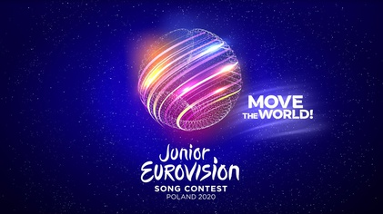

üè† Home
üé§ JESC CUP ‚Äì Varsavia 2020

Diciannovesima edizione del Junior Eurovision Song Contest. Ecco i risultati!
Pos.
Paese
üéµ Canzone
üéôÔ∏è Voce
üíÉ Coreografia
⭐ Totale
üé• I VIDEO !! - JESC 2020